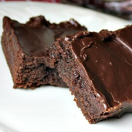

Brownies
Home

Description
These brownies always turn out!
Ingredients
- ½ cup butter
- 1 cup white sugar
- 2 eggs
- 1 teaspoon vanilla extract
- ⅓ cup unsweetened cocoa powder
- ½ cup all-purpose flour
- ¼ teaspoon salt
- ¼ teaspoon baking powder
Frosting:
- 3 tablespoons butter, softened
- 3 tablespoons unsweetened cocoa powder
- 1 tablespoon honey
- 1 teaspoon vanilla extract
- 1 cup confectioners' sugar
Directions
-
Step 1
- Preheat oven to 350 degrees F (175 degrees C).
- Grease and flour an 8-inch square pan.
-
Step 2
- In a large saucepan, melt 1/2 cup butter.
- Remove from heat, and stir in sugar, eggs, and 1 teaspoon vanilla.
- Beat in 1/3 cup cocoa, 1/2 cup flour, salt, and baking powder.
- Spread batter into prepared pan.
-
Step 3
- Bake in preheated oven for 25 to 30 minutes. Do not overcook.
-
To Make Frosting:
-
Combine 3 tablespoons softened butter, 3 tablespoons cocoa, honey, 1 teaspoon vanilla extract, and 1 cup confectioners' sugar.
- Stir until smooth.
- Frost brownies while they are still warm.